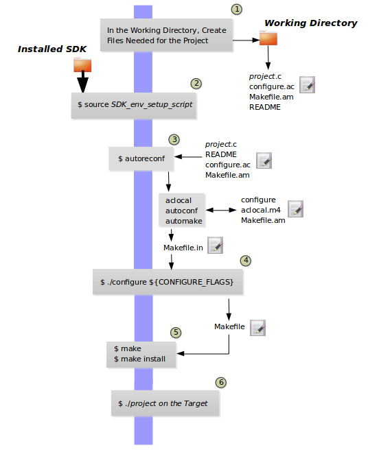
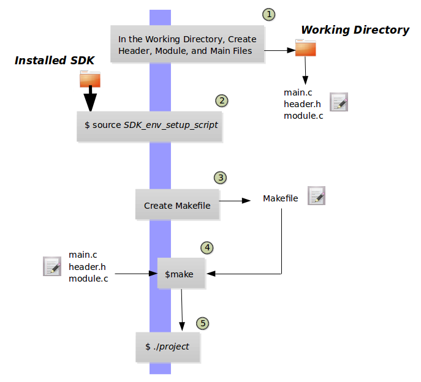

4 Using the SDK Toolchain Directly
You can use the SDK toolchain directly with Makefile and Autotools-based projects.
4.1 Autotools-Based Projects
Once you have a suitable The Cross-Development Toolchain installed, it is very easy to develop a project using the GNU Autotools-based workflow, which is outside of the OpenEmbedded Build System.
The following figure presents a simple Autotools workflow.


Follow these steps to create a simple Autotools-based "Hello World" project:
Nota
For more information on the GNU Autotools workflow, see the same example on the GNOME Developer site.
Create a Working Directory and Populate It: Create a clean directory for your project and then make that directory your working location:
$ mkdir $HOME/helloworld $ cd $HOME/helloworld
After setting up the directory, populate it with files needed for the flow. You need a project source file, a file to help with configuration, and a file to help create the Makefile, and a README file:
hello.c,configure.ac,Makefile.am, andREADME, respectively.Use the following command to create an empty README file, which is required by GNU Coding Standards:
$ touch README
Create the remaining three files as follows:
hello.c:#include <stdio.h> int main() { printf("Hello World!\n"); return 0; }
configure.ac:AC_INIT(hello,0.1) AM_INIT_AUTOMAKE([foreign]) AC_PROG_CC AC_CONFIG_FILES(Makefile) AC_OUTPUT
Makefile.am:bin_PROGRAMS = hello hello_SOURCES = hello.c
Source the Cross-Toolchain Environment Setup File: As described earlier in the manual, installing the cross-toolchain creates a cross-toolchain environment setup script in the directory that the SDK was installed. Before you can use the tools to develop your project, you must source this setup script. The script begins with the string "environment-setup" and contains the machine architecture, which is followed by the string "poky-linux". For this example, the command sources a script from the default SDK installation directory that uses the 32-bit Intel x86 Architecture and the 6.1 Yocto Project release:
$ source /opt/poky/6.1/environment-setup-i586-poky-linux
Another example is sourcing the environment setup directly in a Yocto build:
$ source tmp/deploy/images/qemux86-64/environment-setup-core2-64-poky-linux
Create the configure Script: Use the
autoreconfcommand to generate theconfigurescript:$ autoreconfThe
autoreconftool takes care of running the other Autotools such asaclocal,autoconf, andautomake.Nota
If you get errors from
configure.ac, whichautoreconfruns, that indicate missing files, you can use the "-i" option, which ensures missing auxiliary files are copied to the build host.Cross-Compile the Project: This command compiles the project using the cross-compiler. The CONFIGURE_FLAGS environment variable provides the minimal arguments for GNU configure:
$ ./configure ${CONFIGURE_FLAGS}
For an Autotools-based project, you can use the cross-toolchain by just passing the appropriate host option to
configure.sh. The host option you use is derived from the name of the environment setup script found in the directory in which you installed the cross-toolchain. For example, the host option for an ARM-based target that uses the GNU EABI isarmv5te-poky-linux-gnueabi. You will notice that the name of the script isenvironment-setup-armv5te-poky-linux-gnueabi. Thus, the following command works to update your project and rebuild it using the appropriate cross-toolchain tools:$ ./configure --host=armv5te-poky-linux-gnueabi --with-libtool-sysroot=sysroot_dir
Make and Install the Project: These two commands generate and install the project into the destination directory:
$ make $ make install DESTDIR=./tmp
Nota
To learn about environment variables established when you run the cross-toolchain environment setup script and how they are used or overridden by the Makefile, see the Makefile-Based Projects section.
This next command is a simple way to verify the installation of your project. Running the command prints the architecture on which the binary file can run. This architecture should be the same architecture that the installed cross-toolchain supports:
$ file ./tmp/usr/local/bin/hello
Execute Your Project: To execute the project, you would need to run it on your target hardware. If your target hardware happens to be your build host, you could run the project as follows:
$ ./tmp/usr/local/bin/helloAs expected, the project displays the "Hello World!" message.
4.2 Makefile-Based Projects
Simple Makefile-based projects use and interact with the cross-toolchain
environment variables established when you run the cross-toolchain
environment setup script. The environment variables are subject to
general make rules.
This section presents a simple Makefile development flow and provides an example that lets you see how you can use cross-toolchain environment variables and Makefile variables during development.


The main point of this section is to explain the following three cases regarding variable behavior:
Case 1 --- No Variables Set in the Makefile Map to Equivalent Environment Variables Set in the SDK Setup Script: Because matching variables are not specifically set in the
Makefile, the variables retain their values based on the environment setup script.Case 2 --- Variables Are Set in the Makefile that Map to Equivalent Environment Variables from the SDK Setup Script: Specifically setting matching variables in the
Makefileduring the build results in the environment settings of the variables being overwritten. In this case, the variables you set in theMakefileare used.Case 3 --- Variables Are Set Using the Command Line that Map to Equivalent Environment Variables from the SDK Setup Script: Executing the
Makefilefrom the command line results in the environment variables being overwritten. In this case, the command-line content is used.
Nota
Regardless of how you set your variables, if you use the "-e" option
with make, the variables from the SDK setup script take precedence:
$ make -e target
The remainder of this section presents a simple Makefile example that demonstrates these variable behaviors.
In a new shell environment variables are not established for the SDK until you run the setup script. For example, the following commands show a null value for the compiler variable (i.e. CC):
$ echo ${CC}
$
Running the
SDK setup script for a 64-bit build host and an i586-tuned target
architecture for a core-image-sato image using the current 6.1
Yocto Project release and then echoing that variable shows the value
established through the script:
$ source /opt/poky/6.1/environment-setup-i586-poky-linux
$ echo ${CC}
i586-poky-linux-gcc -m32 -march=i586 --sysroot=/opt/poky/6.1/sysroots/i586-poky-linux
To illustrate variable use, work through this simple "Hello World!" example:
Create a Working Directory and Populate It: Create a clean directory for your project and then make that directory your working location:
$ mkdir $HOME/helloworld $ cd $HOME/helloworld
After setting up the directory, populate it with files needed for the flow. You need a
main.cfile from which you call your function, amodule.hfile to contain headers, and amodule.cthat defines your function.Create the three files as follows:
main.c:#include "module.h" void sample_func(); int main() { sample_func(); return 0; }
module.h:#include <stdio.h> void sample_func();
module.c:#include "module.h" void sample_func() { printf("Hello World!"); printf("\n"); }
Source the Cross-Toolchain Environment Setup File: As described earlier in the manual, installing the cross-toolchain creates a cross-toolchain environment setup script in the directory that the SDK was installed. Before you can use the tools to develop your project, you must source this setup script. The script begins with the string "environment-setup" and contains the machine architecture, which is followed by the string "poky-linux". For this example, the command sources a script from the default SDK installation directory that uses the 32-bit Intel x86 Architecture and the Blacksail Yocto Project release:
$ source /opt/poky/6.1/environment-setup-i586-poky-linux
Another example is sourcing the environment setup directly in a Yocto build:
$ source tmp/deploy/images/qemux86-64/environment-setup-core2-64-poky-linux
Create the Makefile: For this example, the Makefile contains two lines that can be used to set the CC variable. One line is identical to the value that is set when you run the SDK environment setup script, and the other line sets CC to "gcc", the default GNU compiler on the build host:
# CC=i586-poky-linux-gcc -m32 -march=i586 --sysroot=/opt/poky/2.5/sysroots/i586-poky-linux # CC="gcc" all: main.o module.o ${CC} main.o module.o -o target_bin main.o: main.c module.h ${CC} -I . -c main.c module.o: module.c module.h ${CC} -I . -c module.c clean: rm -rf *.o rm target_bin
Make the Project: Use the
makecommand to create the binary output file. Because variables are commented out in the Makefile, the value used for CC is the value set when the SDK environment setup file was run:$ make i586-poky-linux-gcc -m32 -march=i586 --sysroot=/opt/poky/2.5/sysroots/i586-poky-linux -I . -c main.c i586-poky-linux-gcc -m32 -march=i586 --sysroot=/opt/poky/2.5/sysroots/i586-poky-linux -I . -c module.c i586-poky-linux-gcc -m32 -march=i586 --sysroot=/opt/poky/2.5/sysroots/i586-poky-linux main.o module.o -o target_bin
From the results of the previous command, you can see that the compiler used was the compiler established through the CC variable defined in the setup script.
You can override the CC environment variable with the same variable as set from the Makefile by uncommenting the line in the Makefile and running
makeagain:$ make clean rm -rf *.o rm target_bin # # Edit the Makefile by uncommenting the line that sets CC to "gcc" # $ make gcc -I . -c main.c gcc -I . -c module.c gcc main.o module.o -o target_bin
As shown in the previous example, the cross-toolchain compiler is not used. Rather, the default compiler is used.
This next case shows how to override a variable by providing the variable as part of the command line. Go into the Makefile and re-insert the comment character so that running
makeuses the established SDK compiler. However, when you runmake, use a command-line argument to set CC to "gcc":$ make clean rm -rf *.o rm target_bin # # Edit the Makefile to comment out the line setting CC to "gcc" # $ make i586-poky-linux-gcc -m32 -march=i586 --sysroot=/opt/poky/2.5/sysroots/i586-poky-linux -I . -c main.c i586-poky-linux-gcc -m32 -march=i586 --sysroot=/opt/poky/2.5/sysroots/i586-poky-linux -I . -c module.c i586-poky-linux-gcc -m32 -march=i586 --sysroot=/opt/poky/2.5/sysroots/i586-poky-linux main.o module.o -o target_bin $ make clean rm -rf *.o rm target_bin $ make CC="gcc" gcc -I . -c main.c gcc -I . -c module.c gcc main.o module.o -o target_bin
In the previous case, the command-line argument overrides the SDK environment variable.
In this last case, edit Makefile again to use the "gcc" compiler but then use the "-e" option on the
makecommand line:$ make clean rm -rf *.o rm target_bin # # Edit the Makefile to use "gcc" # $ make gcc -I . -c main.c gcc -I . -c module.c gcc main.o module.o -o target_bin $ make clean rm -rf *.o rm target_bin $ make -e i586-poky-linux-gcc -m32 -march=i586 --sysroot=/opt/poky/2.5/sysroots/i586-poky-linux -I . -c main.c i586-poky-linux-gcc -m32 -march=i586 --sysroot=/opt/poky/2.5/sysroots/i586-poky-linux -I . -c module.c i586-poky-linux-gcc -m32 -march=i586 --sysroot=/opt/poky/2.5/sysroots/i586-poky-linux main.o module.o -o target_bin
In the previous case, the "-e" option forces
maketo use the SDK environment variables regardless of the values in the Makefile.Execute Your Project: To execute the project (i.e.
target_bin), use the following command:$ ./target_bin Hello World!
Nota
If you used the cross-toolchain compiler to build target_bin and your build host differs in architecture from that of the target machine, you need to run your project on the target device.
As expected, the project displays the "Hello World!" message.